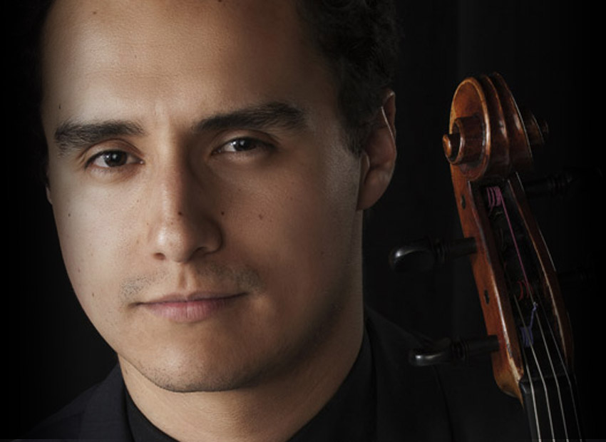

![El violista colombiano Raúl García se ha establecido como uno de los más promisorios artistas de su generación.
Comenzó sus estudios musicales en la Fundación Nacional Batuta. Completó sus estudios de Pregrado en Música en la Fundación Juan N.Corpas con distinción Summa Cum Laude. Viajó a los Estados Unidos y obtuvo los grados de Maestria (MM), y Artist Diploma (AD) en la prestigiosa Universidad de Yale asi como tambien el grado de Doctor en Artes Musicales( DMA) de la Universidad de Rutgers. Entre sus maestros se encuentran Octavio Carmona, Aníbal Dos Santos, Jesse Levine, Toby Appel, Ettore Causa, el cuarteto Tokyo y C.J Chang.
Ha sido galardonado con premios y distinciones tales como el Georgina Lucy Grosvenor Prize, otorgado por la Universidad de Yale. El primer premio en el segundo Concurso Nacional de Viola del Banco de la República, y la competencia para solistas durante el festival internacional FOSJA en Puerto Rico, entre otros. Ha tocado en los más prestigiosos auditorios y salas de concierto en su país natal e internacionalmente, incluyendo el Carnegie Hall, el National Arts Centre, la Biblioteca Luis Angel Arango, el Leonard Bernstein Memorial Stage y el Lincoln Center. Raúl toca en una viola contemporánea (2004) construída por Robert Brode.](images/u809-11.png)